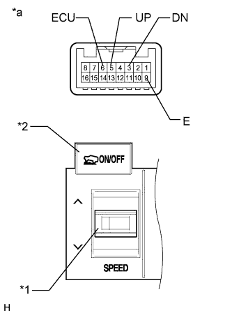

VEHICLE STABILITY CONTROL SYSTEM > Crawl Indicator Light does not Come ON |
| 1.CHECK CAN COMMUNICATION LINE |
Turn the engine switch off.
Connect the intelligent tester to the DLC3.
Turn the engine switch on (IG).
Turn the intelligent tester on.
Select CAN Bus Check from the System Selection Menu screen and follow the prompts on the screen to inspect the CAN bus (Click here).
|
| ||||
| OK | |
| 2.CHECK FOR DTC |
Check for DTCs (Click here).
| Result | Proceed to |
| DTC is not output | A |
| DTC is output | B |
|
| ||||
| A | |
| 3.READ VALUE USING INTELLIGENT TESTER (CRAWL CONTROL SWITCH) |
Turn the engine switch off.
Connect the intelligent tester to the DLC3.
Turn the engine switch on (IG).
Turn the intelligent tester on.
Enter the following menus: Body Electrical / D-SEAT SW / Data List.
| Tester Display | Measurement Item/Range | Normal Condition | Diagnostic Note |
| Crawl Control Main Switch | Crawl control switch (ON/OFF switch)/ ON or OFF | ON: Crawl switch on OFF: Crawl switch off | - |
| Crawl Control Up Switch | Crawl Control Switch (Speed selector switch)/ ON or OFF | ON: Speed selector switch pushed to the up side and held OFF: Speed selector switch not pushed to the up side | - |
| Crawl Control Down Switch | Crawl Control Switch (Speed selector switch)/ ON or OFF | ON: Speed selector switch pushed to the down side and held OFF: Speed selector switch not pushed to the down side | - |
|
| ||||
| OK | |
| 4.READ VALUE USING INTELLIGENT TESTER (CRAWL CONTROL LIGHT) |
Turn the engine switch off.
Connect the intelligent tester to the DLC3.
Turn the engine switch on (IG).
Turn the intelligent tester on.
Enter the following menus: Chassis / ABS/VSC/TRC / Data List.
| Tester Display | Measurement Item/Range | Normal Condition | Diagnostic Note |
| Crawl Control Light | Crawl indicator light/ ON or OFF | ON: Indicator light on OFF: Indicator light off | - |
When performing the Crawl Control Light Active Test, check Crawl Control Light in the Data List (Click here).
| Tester Display | Test Part | Control Range | Diagnostic Note |
| Crawl Control Light | Crawl indicator light | Indicator light ON/OFF | Observe combination meter |
| Result | Proceed to | |
| Data List Display | Data List Display when Performing Active Test ON/OFF Operation | |
| ON | Changes between ON and OFF | A |
| Does not change between ON and OFF | B | |
| OFF | Changes between ON and OFF | A |
| Does not change between ON and OFF | B | |
|
| ||||
| A | ||
| ||
| 5.CHECK HARNESS AND CONNECTOR (CRAWL CONTROL SWITCH - DRIVING SUPPORT SWITCH CONTROL ECU) |
Disconnect the i5 combination switch connector.
Disconnect the G60 driving support switch control ECU connector.
Measure the resistance according to the value(s) in the table below.
| Tester Connection | Condition | Specified Condition |
| i5-6 (ECU) - G60-15 (SWI3) | Always | Below 1 Ω |
| i5-6 (ECU) - Body ground | Always | 10 kΩ or higher |
| i5-5 (UP) - G60-13 (SWI4) | Always | Below 1 Ω |
| i5-5 (UP) - Body ground | Always | 10 kΩ or higher |
| i5-3 (DN) - G60-14 (SWI5) | Always | Below 1 Ω |
| i5-3 (DN) - Body ground | Always | 10 kΩ or higher |
| i5-9 (E) - Body ground | Always | Below 1 Ω |
|
| ||||
| OK | |
| 6.INSPECT CRAWL CONTROL SWITCH (COMBINATION SWITCH) |
Remove the combination switch (Click here).
|  |
Measure the resistance according to the value(s) in the table below.
| Tester Connection | Switch Condition | Specified Condition |
| 5 (UP) - 9 (E) | SPEED (UP): Pressed | Below 1 Ω |
| SPEED (UP): Not Pressed | 10 kΩ or higher | |
| 3 (DN) - 9 (E) | SPEED (DOWN): Pressed | Below 1 Ω |
| SPEED (DOWN): Not Pressed | 10 kΩ or higher | |
| 6 (ECU) - 9 (E) | ON/OFF: Pressed | Below 1 Ω |
| ON/OFF: Not pressed | 10 kΩ or higher |
| *1 | Speed Selector Switch |
| *2 | ON/OFF Switch |
| *a | Component without harness connected (Crawl Control Switch [Combination Switch]) |
|
| ||||
| OK | ||
| ||